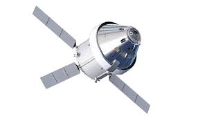
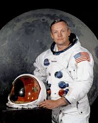
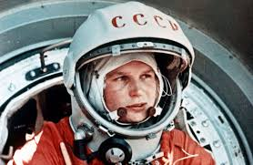

Solar System |
Human space exploration began in 1961 when Yuri Gagarin became the first person to travel to space. Since then, astronauts have orbited Earth, walked on the Moon, and lived aboard space stations like Mir and the International Space Station (ISS). The Apollo missions marked a major milestone with the first Moon landing in 1969. Today, space agencies like NASA, ESA, Roscosmos, and ISRO, along with private companies like SpaceX, are exploring deeper space. Future missions aim to send humans to the Moon again, and eventually Mars, expanding our reach in the universe.
First Crewed Mission on the Moon (Apollo 11)Apollo 11 was the first space mission to land humans on the Moon. Launched by NASA on July 16, 1969, it carried astronauts Neil Armstrong, Buzz Aldrin, and Michael Collins. On July 20, 1969, Neil Armstrong became the first person to walk on the Moon, followed by Buzz Aldrin, while Collins orbited above in the command module. Armstrong’s famous words, “That's one small step for man, one giant leap for mankind,” marked a historic moment in space exploration. Apollo 11 proved that humans could safely travel to another world and return, inspiring generations to come. |
 |
First Man on the Moon (Neil Armstrong)Neil Armstrong was an American astronaut and the first human to walk on the Moon. Born in 1930, he was a skilled pilot and engineer. On July 20, 1969, during NASA’s Apollo 11 mission, Armstrong stepped onto the lunar surface and famously said, “That’s one small step for man, one giant leap for mankind.” His achievement marked a historic moment in space exploration and inspired generations. Before becoming an astronaut, Armstrong served as a Navy pilot and later worked as a university professor. He is remembered as a quiet hero who made history with courage and humility. |
 |
First Man in space (Yuri Gagarin)Yuri Gagarin was a Soviet cosmonaut and the first human to travel into space. On April 12, 1961, he orbited Earth aboard the spacecraft Vostok 1, marking a historic moment in human space exploration. Gagarin’s flight lasted just 108 minutes, but it made him an international hero and a symbol of Soviet space achievement during the Cold War. He became a global icon and inspired generations of scientists and explorers. Gagarin's bravery and charm made him a beloved figure worldwide, and his mission paved the way for future manned spaceflights. |
 |
Designed and developed by Ishika Ahuja 6G